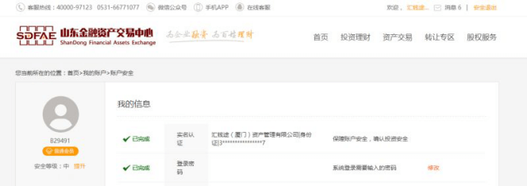
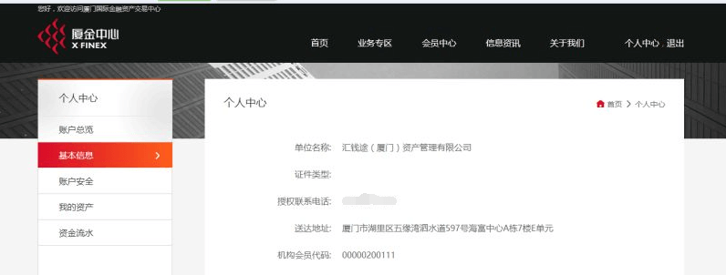

12月7日，秒钱平台SPV公司“汇钱途（厦门）资产管理有限公司”正式作为山东金交所、厦门金交所的会员，可以发行、登记及交易大额非标资产及其他符合金交所要求的资产，让普通投资者也能认购到专业级别的金融理财产品。
山东金交所是经山东省人民政府批准设立的综合性金融资产交易平台，拥有国家财政部门指定的金融企业资产交易资质，是具有政府公信力的规范化、市场化、现代化的金融创新企业。厦门金交所是由福建省人民政府设批建立的资产证券化产品全在线交易平台。


金交所是由地方政府主导筹办，在选择合作平台时，会对平台自身进行系列深度考察，也就是说有相当高的门槛。据不完全统计，目前14家互金平台在资产端接入了金交所产品，既包括陆金所、人人贷、开鑫贷等P2P平台，也包括苏宁金融、京东金融、万达金融等消费金融平台。但像秒钱一样，能同时与两家金交所达成战略合作的互金平台较为罕见。
秒钱是一家国内专业的第三方债权交易平台，通过与多家实力雄厚的保理商、融资租赁、消费信贷等机构合作，为诸如一汽集团、东风集团、英利集团、华信集团等众多大型央企、国企、上市企业、供应商提供资金支持。自上线以来，受到众多追求安全、稳健、灵活等投资需求的投资者所青睐。据秒钱官方显示，其注册用户已经突破200万，现已安全运营逾1000天。
据相关数据显示，互金平台投资逾期的风险，80%来自资产端的项目管理问题。整个互金行业面临的最大问题是资产端优质项目的匮乏，优质资产的获取和筛选是互金行业风控的第一道门槛，也是做好后续风险控制和平稳运营的基础。
事实上，互金平台与金交所合作的本质除了是合规之外，由于其项目是由国有交易所进行资产审核托管，再备案登记挂牌，全程由地方政府进行交易监管，故合作更多的是从源头上筛选优质资产端，在项目来源和风险控制方面更加有保障。秒钱CEO郭龙欣表示，秒钱与山东金交所、厦门金交所的深度合作，将为资产端企业的大额资金需求提供了融资渠道，也给需求多样化的用户提供更多理财服务。
郭龙欣还透露，未来秒钱将分拆一个应用大数据风控技术拓展的小额个人无抵押信用贷款业务平台，该板块将严格遵循《网络借贷信息中介机构业务活动管理办法》的借款额度及相关要求开展业务。